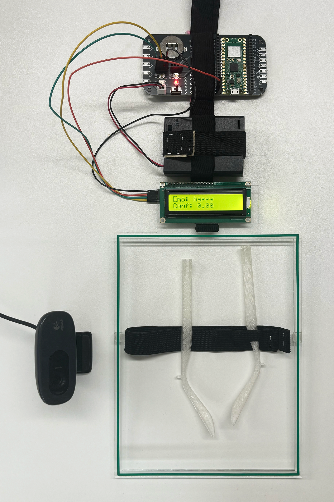

Emo Frame
Who or what gets to define the subtleties of how we feel?
Emo Frame is a wearable device that materializes the digital gaze of machine vision. A transparent acrylic frame, cut in the shape of the bounding boxes used by facial recognition systems, sits in front of the wearer's face. When activated, a webcam feeds into a DeepFace model that classifies the wearer's expression in real time; an Arduino-driven LCD screen mounted on the frame displays the identified "emotion" and its confidence score for others to read.
Between two people, a machine's reading now stands as a third presence, at once a bridge and a distortion.
